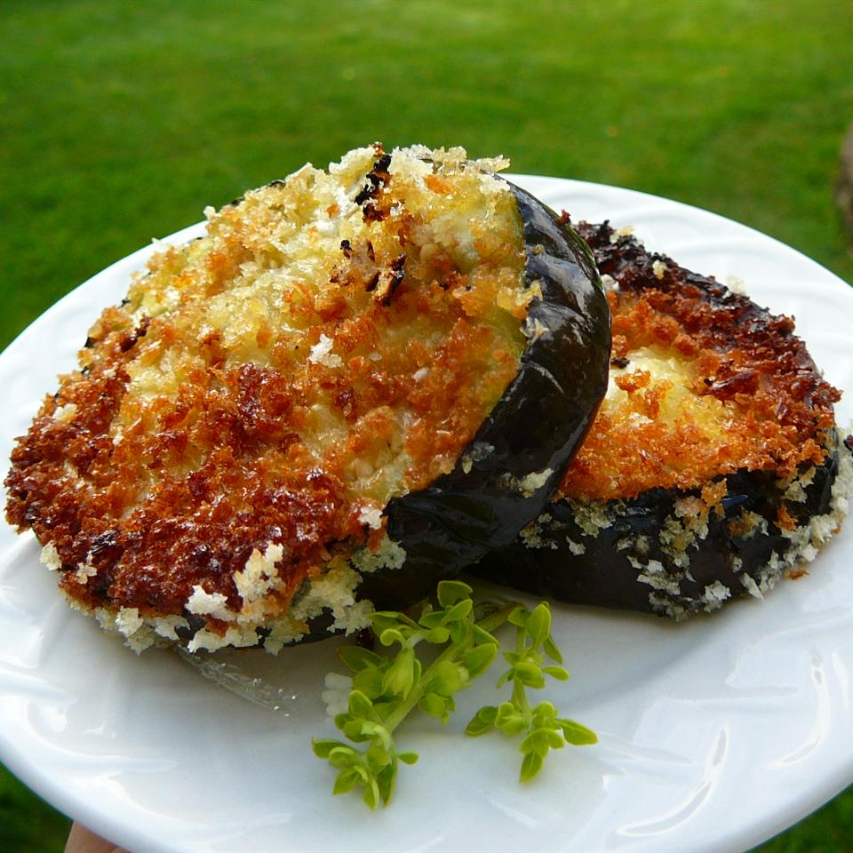

Easy Fried Eggplant

Description
A fried eggplant recipe that's easy, quick, and so tasty! I serve it with sliced fresh tomatoes, fresh green beans, and bread and butter. An inexpensive meal from my childhood and still a favorite!
Ingredients
- 2 tablespoons canola oil
- 1 large eggplant, peeled and sliced
- 3 eggs, beaten
- 2 cups dry bread crumbs
Steps:
- Warm oil in a large skillet over medium-high heat.
- Dip eggplant slices in egg, then coat with breadcrumbs.
- Place breaded eggplant in the hot oil and fry until golden brown, 2 to 3 minutes per side. Drain on paper towels.